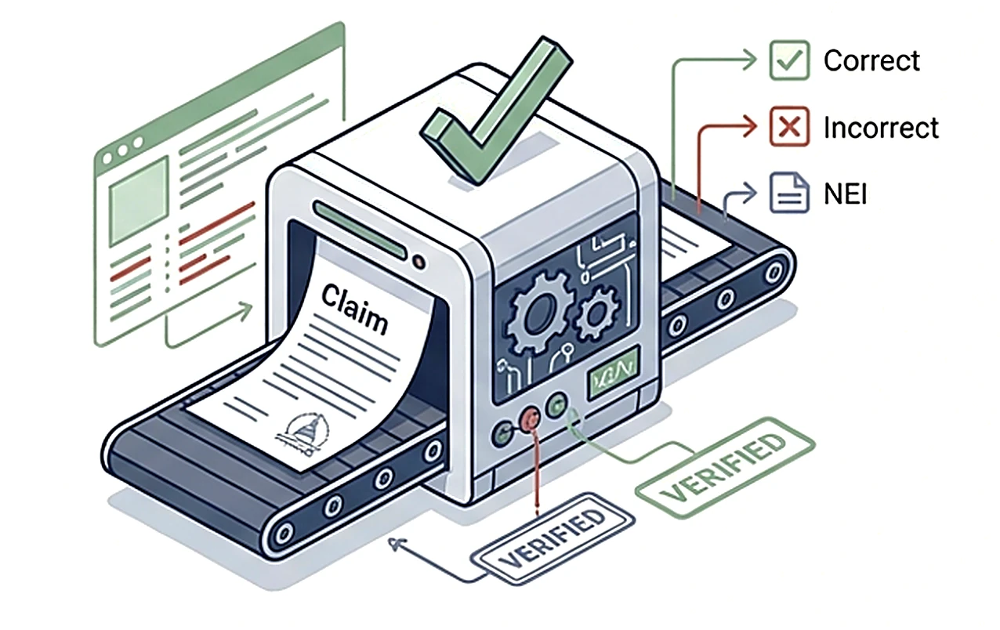
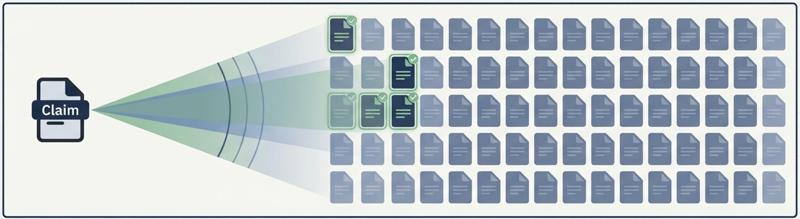

ကျန်းမာရေး page
ထောပတ်သီးကို နေ့စဉ်စားလျှင် အသက် ဆယ်နှစ် ပိုရှည်စေသည်။
စစ်ဆေးချင်သော မြန်မာစာကြောင်းကို အထောက်အထားဖြင့် စစ်ဆေးပေးသော စနစ်
post သုံးခုလုံး ယုံကြည်ရလောက်အောင် ရေးထားသည်။
မြန်မာ သတင်းနှင့် post များကို အများအပြား မျှဝေကြသော်လည်း စစ်ဆေးသူ နည်းသည်။
စကားလုံးကြား space မရှိ၊ Zawgyi / Unicode နှစ်မျိုး၊ fact-check dataset မရှိသလောက်။
မြန်မာစာ နည်းနည်းသာ သင်ထားသဖြင့် မသိလျှင် ချောမွေ့သော အဖြေကို ထွင်ပြောတတ်သည် (hallucination)။

နေ့စဉ်နှင့်အမျှ ထွက်ပေါ်နေသော အဆိုပြုချက် (Claims) များစွာထဲမှ မှားယွင်းသော သတင်းအချက်အလက်များကို လူကိုယ်တိုင် လိုက်လံစစ်ဆေးရန် အချိန်နှင့် လုပ်အား မလုံလောက်ခြင်း။

AI အသုံးပြု၍ အဆိုပြုချက်တစ်ခုသည် မှန်လား၊ မှားလား သို့မဟုတ် မသိဘူးလား ဆိုသည်ကို အလိုအလျောက် ခွဲခြားပေးနိုင်သော စနစ် (Verification & Evidence Retrieval System) ကို တည်ဆောက်ရန်။
viral post ကို ယုံကြည်ရသော source နှင့် မြန်မြန် တိုက်စစ်သည်
assignment ထဲမှ အချက်အလက်ကို စာအုပ်နှင့် တိုက်စစ်သည်
ပိဋကတ် အချက်အလက်ကို မူရင်း စာတမ်းနှင့် တိုက်စစ်သည်
AI အဖြေ မထုတ်ခင် အထောက်အထား ရှိ/မရှိ စစ်ပေးသည်
စစ်ဆေးချင်သော စာကြောင်း
အထောက်အထား စာတမ်းများ စုစည်းရာနေရာ
claim ရိုက်ထည့် → label နှင့် အထောက်အထား ပြသည်
claim ထဲမှ စကားလုံးများကို ရေတွက်ပြီး ခန့်မှန်းသည် (Naive Bayes)
corpus ထဲမှ အထောက်အထား ရှာ၍ နှိုင်းယှဉ်သည် (RAG)
DOC_026 က ထင်ထင်ရှားရှား ပထမ ရသည် — ကျန်တာတွေက 0.09 သာ။
Traditional Statistical NLP Classifier for Myanmar Text
ယုံကြည်ရသော မြန်မာ စာတမ်းများကို စုထားသော စာအုပ်
စစ်ဆေးရမည့် အဆို (claim) အားလုံးနှင့် အဖြေ။
claims ၆၂ ခုထဲမှ ၄၉ ခု — အဖြေ ပါသည်။
claims ၆၂ ခုထဲမှ ကျန် ၁၃ ခု — အဖြေ မပါ။
| Problem | Before | After |
|---|---|---|
| Vowel typed out of order | နုိင် | နိုင် |
| ေ typed before its consonant | ေကျာင်း | ကျောင်း |
| Zero-width white space | မြန် မာ | မြန်မာ |
| Digit ၀ used as letter ဝ | ၀န် | ဝန် |
| Double mark | မာ့့ | မာ့ |
| Multiple Space | မြန်မာ နိုင်ငံ | မြန်မာ နိုင်ငံ |
preprocessor.pyif is_zawgyi(text): text = zawgyi_to_unicode(text) text = unicodedata.normalize("NFC", text) text = _INVISIBLE.sub("", text) text = _fix_typing_order(text) text = re.sub(r" {2,}", " ", text).strip()
Eg: text = re.sub(r"([ုူ])([ိီဲ])", r"\2\1", text)ဗျည်းတွေ့ရင် syllable အသစ် စတယ်
ကတ် · ဓမ္မာ ကို မဖြတ်ဘူး
Corpus document ၃၅ ခုထဲက token ပါတဲ့ document ဘယ်နှစ်ခု ရှိလဲ
ရှားလေ အမှတ်မြင့်လေ
document အရေအတွက်ကို ၁ ပေါင်း (36)
df ကို ၁ ပေါင်းလို့ ၀ နဲ့ စားတာ မဖြစ်ဘူး
ln နဲ့ ချုံ့ပြီး ၁ ပေါင်း — document တိုင်းမှာ ပါရင်တောင် weight ၁ ကျန်
| Token | TF | IDF | TF × IDF |
|---|---|---|---|
| အ | 0.091 | 1.693 | 0.154 |
| ဘိ | 0.091 | 3.197 | 0.291 |
| ဓမ္မာ | 0.091 | 2.974 | 0.270 |
| ပိ | 0.091 | 2.792 | 0.254 |
| ဋ | 0.091 | 3.485 | 0.317 |
| ကတ် | 0.091 | 3.485 | 0.317 |
| ကျမ်း | 0.182 | 2.638 | 0.480 |
| ၅ | 0.091 | 3.197 | 0.291 |
| ပါ | 0.091 | 1.811 | 0.165 |
| ဝင် | 0.091 | 2.638 | 0.240 |
စာကြောင်း တို/ရှည် မတူလည်း တန်းတူ နှိုင်းယှဉ်လို့ရအောင် ညှိတယ်
Train claim ၄၉ ခုထဲက label တစ်ခုစီ ပါတဲ့ အချိုး (α = 1 နဲ့ smoothing)
Label တစ်ခုစီရဲ့ train claim တွေထဲက TF-IDF တန်ဖိုးတွေကို ပေါင်းပြီး တွက်တယ်
| label | (ပေါင်း + 1) ÷ (စုစုပေါင်း + 2,812) | P(ကျမ်း | label) |
|---|---|---|
| SUPPORTS | (0.9 + 1) ÷ (63.0 + 2,812) | 0.000661 |
| REFUTES | (0.5 + 1) ÷ (59.5 + 2,812) | 0.000522 |
| NEI | (0.3 + 1) ÷ (49.0 + 2,812) | 0.000454 |
x × log P(token | label) ကို ပေါင်းပြီး score အမြင့်ဆုံး label ကို ရွေး (probability တွေ သေးလို့ log နဲ့ ပေါင်းတယ်)
| Token | x | SUPPORTS | REFUTES | NEI |
|---|---|---|---|---|
| အ | 0.167 | -1.201 | -1.217 | -1.225 |
| ဘိ | 0.316 | -2.369 | -2.459 | -2.486 |
| ဓမ္မာ | 0.294 | -2.169 | -2.264 | -2.287 |
| ပိ | 0.276 | -2.086 | -2.105 | -2.170 |
| ဋ | 0.345 | -2.628 | -2.653 | -2.742 |
| ကတ် | 0.345 | -2.628 | -2.653 | -2.742 |
| ကျမ်း | 0.522 | -3.819 | -3.941 | -4.014 |
| ၅ | 0.316 | -2.434 | -2.368 | -2.458 |
| ပါ | 0.179 | -1.331 | -1.320 | -1.341 |
| ဝင် | 0.261 | -1.971 | -1.989 | -2.007 |
| log P(label) | -1.007 | -1.061 | -1.243 | |
| Score | -23.64 | -24.03 | -24.72 |
| True \ Predicted | SUP | REF | NEI |
|---|---|---|---|
| SUPPORTS | 5 | 9 | 4 |
| REFUTES | 10 | 4 | 3 |
| NOT ENOUGH INFO | 7 | 7 | 0 |
Same words, opposite truth. Naive Bayes never compares the claim with the evidence.
ဘာကြောင့် NB နှင့်တင် မလုံလောက်တာလဲ? စကားလုံးတူနေရုံဖြင့် အဆိုပြုချက် မှန်ကန်သည်ဟု မဆုံးဖြတ်နိုင်ပါ။
အဖြေ ၄ ခုထဲက မှန်တာ တစ်ခုကို ရွေးကြည့်ရအောင်
စာကြည့်တိုက်မှူးက သက်ဆိုင်တဲ့စာအုပ်ကို ရှာပေးပြီး တရားသူကြီးက နှိုင်းယှဉ်ကာ ဆုံးဖြတ်ပါတယ်
စာသားကို ဂဏန်းတန်း ပြောင်း
ဘယ်လောက် ဆင်လဲ တိုင်း
အဆင်ဆုံး document ရွေး
ယှဉ်ပြီး ဆုံးဖြတ်၊ ရှင်းပြ
Claim နဲ့ သက်ဆိုင်တဲ့ document ကို corpus ထဲမှာ ရှာပါတယ်။

q = claim ရဲ့ vector · d = document တစ်ခုရဲ့ vector
1 = ဦးတည်ရာ တူ · 0 = ဘာမှ မဆိုင်
Pipeline A ရဲ့ TF-IDF vector (ဂဏန်း 2,812 လုံး) ကိုပဲ ပြန်သုံးပါတယ်
retriever.py · vector တွေ အရှည် 1 ဖြစ်ပြီးသားS = cosine_similarity( vectorizer.transform(claims), self.D) # shape: claims x 35 documents
Google search မှာ ထိပ်ဆုံးရလဒ်တွေ ပြသလိုပဲ အမှတ်အမြင့်ဆုံး document K ခုကို ရွေးပါတယ်
မင်္ဂလသုတ်တွင် မင်္ဂလာ ၃၈ ပါးကို ဟောကြားထားသည်။
… ကုမာရပဉှာ၊ မင်္ဂလသုတ်၊ ရတနသုတ်၊ … မေတ္တသုတ် တို့ ဖြစ်သည်။
ပဋ္ဌာန်းတွင် ပစ္စည်း ၂၄ ပါး ပါဝင်သည်။ … မဇ္ဈိမပဋိပဒါကို ဟောကြားထားသည်။
retriever.py · search(claims, k=3)order = np.argsort(-S, axis=1)[:, :k] # highest score first
τ (tau) ဆိုတာ အနိမ့်ဆုံး ဆင်တူမှုမှတ် (threshold) ပါ။ အမြင့်ဆုံး cosine က 0.24 ထက် နိမ့်ရင် NOT ENOUGH INFO
Train claim ၄၉ ခုပေါ်မှာ 0.20 မှ 0.35 အထိ စမ်းပြီး အမှန်အများဆုံးကို ရွေးပါတယ် (empirical)
NEI တချို့က 0.49 အထိ ရလို့ ဆင်တူမှု တစ်ခုတည်းနဲ့ အမြဲ ခွဲလို့ မရပါဘူး
ထိပ်ဆုံး document က မှန်တာ ဘယ်နှစ်ခါလဲ
Top 3 ထဲမှာ မှန်တဲ့ document ပါတာ ဘယ်နှစ်ခါလဲ
မှန်တဲ့ document ရဲ့ ပျမ်းမျှ နေရာ (1 နဲ့ နီးလေ ကောင်းလေ)
Claim ကို သက်ဆိုင်တဲ့ စာကြောင်းတွေနဲ့ ဘေးချင်းကပ် ထားပါတယ်။
အဖြေထုတ်ပေးခြင်း
| # | စစ်တဲ့အချက် | ဆုံးဖြတ်ချက် | ကျွန်ုပ်တို့ data ထဲက ဥပမာ |
|---|---|---|---|
| 1 | Cosine < τ (0.24) | NEI | မင်းတင်မွန် ဘောလုံးနည်းပြ · 0.21 |
| 2 | ဂဏန်း မတူ | REFUTES | ၂၈ ပါး vs ၃၈ ပါး |
| 3 | အမည် မတူ | REFUTES | Samsung Galaxy vs HTC Dream |
| 4 | အငြင်း / အဟုတ် မတူ | REFUTES | မရောက်ရှိခဲ့ပါ vs ရောက်ရှိခဲ့သည် |
| 5 | Claim စာလုံး 85%+ ပါ | SUPPORTS | CLM_003 · 87% ကိုက်ညီ |
rag_verifier.py · _decide()if score < tau: return NEI if numeric_conflict: return REFUTES if entity_conflict: return REFUTES if negation_conflict: return REFUTES if coverage >= 0.85: return SUPPORTS
| True \ Pred | SUP | REF | NEI |
|---|---|---|---|
| SUPPORTS | 5 | 0 | 0 |
| REFUTES | 0 | 4 | 0 |
| NEI | 0 | 1 | 3 |
| Pipeline A · Naive Bayes | Pipeline B · RAG | |
|---|---|---|
| ဘာကို ကြည့်လဲ | claim စာသား သက်သက် | claim + corpus ထဲက evidence |
| ဘယ်လို ဆုံးဖြတ်လဲ | စာလုံး ဖြစ်နိုင်ခြေ (probability) | evidence နဲ့ ယှဉ်ပြီး rule စစ် |
| ၂၈ vs ၃၈ လို အမှား | မသိ — စာလုံး တူနေလို့ | ဂဏန်း မတူ → REFUTES |
| NOT ENOUGH INFO | စာလုံးကနေ ခန့်မှန်း | cosine < τ (0.24) |
| ရှင်းလင်းချက် | မပါ | မြန်မာလို + evidence ကိုးကား |
| Test ရလဒ် | 0 / 13 (0%) | 12 / 13 (92%) |
ဗိုလ်ချုပ်အောင်ဆန်းရဲ့ ကျောင်းသားဘဝ document (0.47) ကြောင့် threshold ကို ကျော်သွားပေမဲ့ ကြက်တောင်အကြောင်း မပါပါဘူး
Evidence မှာ “ခွဲထားသည်” လို့ ရေးလို့ အဓိပ္ပာယ်တူပေမဲ့ စာလုံးမတူတာကြောင့် 85% မပြည့်ပါဘူး
အဖြေ ၄ ခုထဲက မှန်တာ တစ်ခုကို ရွေးကြည့်ရအောင်